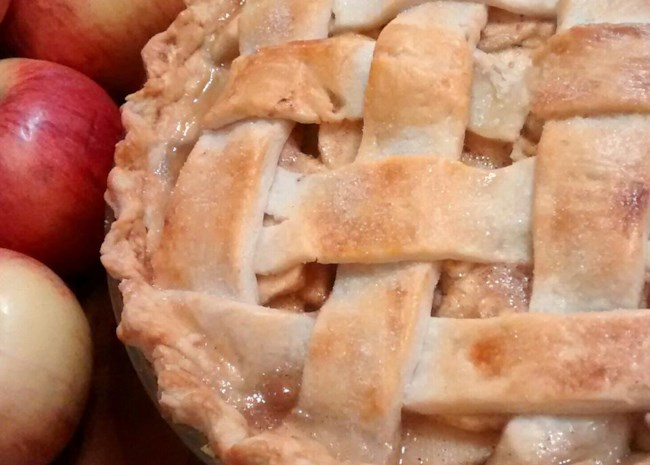

Apple Pie

Nutrition Facts
Per Serving: 249 calories; protein 1.7g; carbohydrates 42.2g; fat 9.1g; cholesterol 3.8mg; sodium 128.1mg.
Ingredients
- 6 cup thinly sliced apples
- 3/4 cup white sugar
- 1 tablespoon butter
- 1 tablespoon ground cinnamon
- 1 recipe pastry for a 9-inch double-crust pie
Steps
-
Prepare your pastry for a two crust pie. Wipe, quarter, core, peel, and slice apples; measure to 6 cups.
-
Combine sugar and cinnamon. The amount of sugar used depends on how tart your apples are.
-
Arrange apples in layers in pastry lined pie plate. Sprinkle each layer with sugar and cinnamon. Dot top layer with small pieces of butter or margarine. Cover with top crust.
-
Place on lowest rack in oven preheated to 450 degrees F (230 degrees C). Bake for 10 minutes, then reduce oven temperature to 350 degrees F (175 degrees C). Bake for 30 to 35 minutes longer. Serve warm or cold.